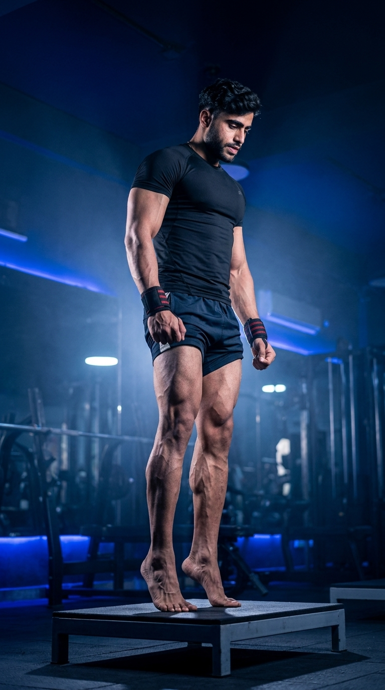

Primary Muscle
Gastrocnemius
Build Bigger Calves, Stronger Ankles, and Better Lower-Leg Power
The Standing Calf Raise is one of the most effective exercises for strengthening and developing the calf muscles, particularly the gastrocnemius. It improves ankle stability, balance, lower-leg power, and athletic performance while supporting movements such as walking, running, jumping, and sprinting. This simple yet highly effective exercise is suitable for beginners and advanced lifters alike.

Gastrocnemius
Bodyweight or Calf Raise Machine
Beginner
Isolation
Discover which muscles drive the Standing Calf Raise and how supporting muscle groups improve ankle stability, lower-leg strength, balance, and explosive power for walking, running, jumping, and everyday movement.
Plantar Flexion & Calf Development
Provides Strength & Endurance During Plantar Flexion
Supports Foot Stability & Arch Control
Improve Balance, Stability & Ankle Control
Discover how the Standing Calf Raise strengthens the calf muscles, improves ankle stability, enhances athletic performance, supports balance, and develops powerful lower legs for sports and everyday movement.
The Standing Calf Raise directly targets the gastrocnemius to increase calf size, strength, and muscular definition.
Strengthening the calves enhances ankle stability, reducing the risk of injuries during walking, running, and sports activities.
Strong calf muscles improve jumping, sprinting, acceleration, and rapid changes of direction, enhancing overall athletic performance.
Strong calves and ankles improve balance and body control, making everyday movements more stable and efficient.
Well-developed calf muscles generate stronger push- off force, making walking, running, hiking, and climbing stairs easier and more efficient.
Regular calf training increases muscular endurance, allowing the lower legs to perform longer with less fatigue during exercise and daily activities.
Follow these step-by-step instructions to perform the Standing Calf Raise with proper technique, full range of motion, and controlled tempo to maximize calf development, improve ankle strength, and reduce the risk of injury.
Stand tall with your feet hip-width apart on the floor or the edge of a calf raise platform. Keep your chest up, shoulders relaxed, and core engaged before beginning the movement.
Distribute your weight evenly across both feet before lifting your heels.
Press through the balls of your feet and lift your heels as high as possible while fully contracting your calf muscles at the top of the movement.
Pause briefly at the top to maximize calf muscle contraction.
Slowly lower your heels until you feel a full stretch in your calves. Avoid bouncing or dropping quickly between repetitions.
A slow lowering phase increases muscle activation and promotes better growth.
Keep your knees slightly unlocked and your body upright throughout the exercise. Move only at the ankles while avoiding excessive body sway.
Avoid using momentum—let your calf muscles perform all the work.
Continue performing controlled repetitions while achieving a complete stretch at the bottom and a full contraction at the top for every rep.
Prioritize full range of motion and control before increasing resistance.
Avoid these common technique mistakes to maximize calf development, improve ankle strength, maintain proper movement mechanics, and perform the Standing Calf Raise safely and effectively.
Bouncing through repetitions reduces calf muscle activation and places unnecessary stress on the ankles and Achilles tendon.
Lift and lower your heels slowly with full control on every repetition.
Partial repetitions limit muscle growth and reduce the effectiveness of the exercise.
Lower your heels fully for a stretch and rise as high as possible during every rep.
Excessive knee bending shifts emphasis away from the gastrocnemius and reduces the effectiveness of the Standing Calf Raise.
Keep your knees slightly unlocked but relatively straight throughout the movement.
Allowing your ankles to roll inward or outward reduces stability and increases the risk of ankle strain.
Press evenly through the balls of both feet while keeping your ankles aligned throughout the exercise.
Apply these expert coaching cues to maximize calf muscle activation, improve ankle stability, and perform every Standing Calf Raise with better control, balance, and full range of motion.
Lower your heels until you feel a deep stretch, then rise onto your toes as high as possible to fully contract the calf muscles.
A complete stretch and full contraction produce better calf growth than partial repetitions.
Hold the highest position for one to two seconds to maximize muscle contraction and improve your mind-muscle connection.
Squeezing your calves at the top increases muscle activation.
Lift and lower your heels slowly instead of using momentum. Controlled repetitions keep constant tension on the calf muscles.
Slow, controlled movement builds stronger calves than bouncing through the exercise.
Master bodyweight calf raises before adding resistance with dumbbells, a calf raise machine, or a Smith machine.
Perfect technique always comes before heavier weight.
Progress from mastering bodyweight Standing Calf Raises to building stronger, more muscular calves by gradually increasing resistance while maintaining perfect technique and a full range of motion.
Learn proper foot positioning, balance, and full range of motion using only your body weight before adding resistance.
Balance, ankle control, posture, and movement quality.
Perform slow, controlled repetitions with a full stretch at the bottom and a strong contraction at the top while avoiding momentum.
Tempo, mind-muscle connection, and consistent technique.
Once your technique is consistent, increase the challenge using dumbbells, a Smith machine, or a standing calf raise machine to stimulate muscle growth.
Progressive overload, calf strength, and muscle hypertrophy.
Challenge yourself with heavier loads, single-leg calf raises, paused repetitions, or higher training volume to maximize calf size, strength, and muscular endurance.
Maximum calf strength, muscle growth, endurance, and long-term progression.
Find answers to common questions about Standing Calf Raise technique, muscles worked, ankle stability, training frequency, proper form, and how to build stronger, more muscular calves with this effective isolation exercise.
Standing Calf Raises primarily target the gastrocnemius while also engaging the soleus, tibialis posterior, and other ankle stabilizing muscles.
Yes. Standing Calf Raises are one of the most effective exercises for developing the gastrocnemius, especially when performed with a full range of motion and progressive overload.
Yes. Beginners should first master bodyweight Standing Calf Raises before progressing to machines, dumbbells, or additional resistance.
Perform 3–5 sets of 10–20 repetitions for muscle growth. Use controlled repetitions with a full stretch and strong contraction on every rep.
Yes. Holding the top position for one to two seconds improves calf muscle contraction and increases the effectiveness of each repetition.
Standing Calf Raises are typically performed near the end of a leg workout after compound exercises like squats and leg presses, or as a dedicated calf isolation exercise.
Explore other leg exercises that complement the Walking Lunge and help you build stronger quadriceps, glutes, hamstrings, and overall lower-body strength through both compound and isolation movements.


Continue building stronger legs with step-by-step exercise guides covering proper technique, muscles worked, common mistakes, expert coaching tips, and progression strategies for every fitness level.